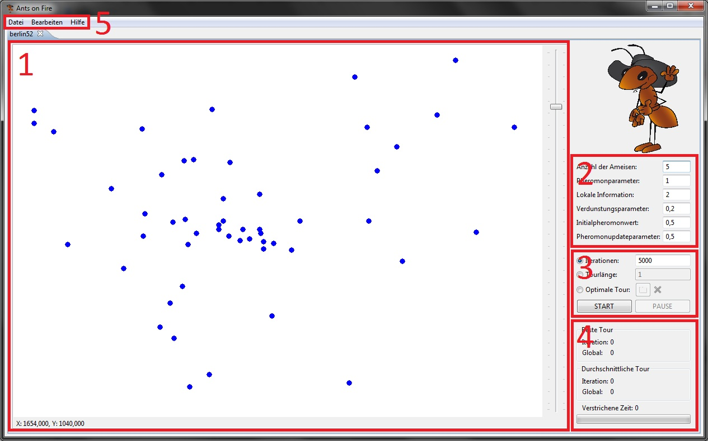
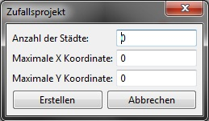
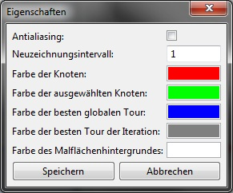
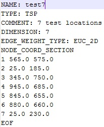
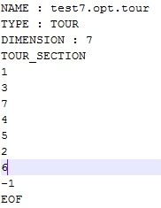

Einleitung
Die Anwendung "Ants on Fire" bietet einen ACO Algorithmus um TSPs zu lösen.
Traveling Salesman Problem
Das Traveling Salesman Problem (TSP) beschreibt das Problem des
Handelsreisenden. Dabei soll eine Menge an Orten abgegangen werden, wobei jeder
Ort bis auf den Startort genau einmal besucht wird. Der Startort wird genau
zwei mal besucht, da er sowohl Start- als auch Zielpunkt der Reise ist.
Ant Colony Optimization
Die Ant Colony Optimization (ACO) beschreibt die Lösung von Problemen wie
das TSP mithilfe einer Modellierung einer Ameisenkolonie. Dabei werden auf
Wegen, die eine gute Lösung versprechen, Pheromone gelegt. Anhand der
Pheromonmenge wird entschieden, ob die nächste Ameise auch diesen Weg nehmen
soll. Somit verblassen schlechte Lösungen mit wenig Pheromon, wohin gegen gute
Lösungen mit viel Pheromon bevorzugt werden.
Das Programm im Einzelnen
Genereller Aufbau

Die Anwendung ist in mehrere Bereiche geteilt. Der größte Bereich ist die
Zeichenfläche (1). Hier werden alle Knoten und gefundenen Touren visuell
dargestellt. Der Parameterbereich (2) dient zur Konfiguration des
ACO-Algorithmus. Im Iterationsmodusbereich (3) lassen sich der Iterationsmodus
und die Abbruchbedingung einstellen. Außerdem kann der Algorithmus hier
gestartet und gestoppt werden. Der Ausgabebereich (4) zeigt die Länge
verschiedener gefundener Touren, die vergangene Zeit und den Fortschritt. Die
Menüleiste (5) stellt eine Vielzahl an Aktionen bereit um Probleme zu laden,
speichern und andere Operationen durchzuführen. Die Bereiche 1, 2, 3 und 4 sind
in jeweils einem Tab zusammengefasst. Es können also mehrere TSPs auf einmal
bearbeitet werden.
Die Zeichenfläche
Die Zeichenfläche stellt die Knoten des momentan geladenen TSP und gefundene
Touren grafisch dar. Der Anwender kann durch einen Klick auf einen Knoten
diesen Auswählen. Ausgewählte Knoten können durch das Ziehen mit der Maus an
eine beliebige Stelle verschoben werden. Außerdem kann durch einen Druck auf
die Entfernentaste ein Ausgewählter Knoten entfernt werden. Durch Doppelklick
auf die Zeichenfläche wird außerdem ein Dialog geöffnet, mit dem ein neuer
Knoten hinzugefügt werden kann. Ferner kann mit dem Balken auf der rechten Seite
hinein und herausgezoomt werden.
Der Parameterbereich
Der Parameterbereich dient zur Konfiguration des ACO-Algorithmus. Die Einstellbaren Parameter sind:
- Anzahl der Ameisen: dieser Parameter bestimmt, wie viele Ameisen pro
Iteration die Knoten ablaufen um einen Weg zu finden. Erlaubte Werte
sind ganze Zahlen, die größer als 0 sind.
- Pheromonparameter: dieser Parameter bestimmt, wie wichtig das
Pheromon auf einer Kante (die Strecke zwischen 2 Knoten) bei der Auswahl
des Weges ist. Je größer die Zahl, desto wichtiger der Pheromonwert der
Kante. Erlaubte Werte sind Dezimalzahlen zwischen 0 (exklusive) und 5
(inklusive).
- Lokale Information: dieser Parameter bestimmt, wie wichtig die
Entfernung zwischen 2 Knoten bei der Auswahl des Weges ist. Je größer
der Wert, desto mehr werden kürzere Distanzen bevorzugt. Erlaubte Werte
sind Dezimalzahlen zwischen 0 (exklusive) und 5 (inklusive).
- Verdunstungsparameter: dieser Parameter bestimmt, wie viel Pheromon
auf allen Kanten nach einer Iteration verdunstet. Bei einem
Verdunstungsparameterwert von 0,25 verdunsten 25% der Pheromone auf
allen Kanten nach einer Iteration. Erlaubte Werte sind Dezimalzahlen
zwischen 0 (exklusive) und 1 (inklusive).
- Initialer Pheromonwert: dieser Parameter bestimmt, wie viel Pheromon
beim Algorithmusstart bereits auf den Kanten liegt. Erlaubte Werte sind
Dezimalzahlen größer als 0.
- Pheromonupdateparameter: dieser Parameter bestimmt, wie viel
Pheromon eine Ameise auf dieser Kante hinterlässt, wenn sie darüber
gelaufen ist. Größere Werte bedeuten dabei ein Hinterlassen größerer
Pheromonmengen. Erlaubte Werte sind Dezimalzahlen größer als 0.
Der Iterationsmodusbereich
In diesem Bereich kann der Iterarionsmodus und die Abbruchbedingung
eingestellt werden. Die Iterationsmodi, die zur Auswahl stehen, sind:
- Iterationsanzahl: es wird eine bestimmte Anzahl oft iteriert, diese
Anzahl lässt sich im Textfeld hinter dem Optionsfeld einstellen.
Erlaubte Werte sind ganze Zahlen größer als 0.
- Tourlänge: es wird solange iteriert, bis eine Strecke gefunden
wurde, deren Länge kürzer als oder gleich der eingestellten Länge ist.
Erlaubte Werte sind Dezimalzahlen größer als 0.
- Optimale Tour: es wird solange iteriert, bis eine eingestellte
Lösung gefunden wurde. Mit dem Button hinter dem Optionsfeld kann eine
.opt.tour Datei geladen werden. Diese Datei muss einer bestimmten Norm
entspechen, wie in Abschnitt 3 erläutert. Es wird solange iteriert, bis
eine Ameise exakt eine Folge von Knoten abgelaufen ist.
Mit dem linken Button lässt sich der Algorithmus starten und stoppen.
Der Algorithmus kann nur gestartet werden, wenn mindestens zwei Knoten
existieren und alle eingegebenen Parameter der Norm entsprechen. Sind
diese Bedingungen nicht gegeben, wird der Button ausgegraut. Mit dem
rechten Button kann der Algorithmus pausiert und wieder aufgenommen werden.
Diese Option ist nur verfügbar, falls der Algorithmus vorher gestartet
wurde.
Ausgabebereich
Hier werden die errechneten Tourlängen, die vergangene Zeit und ein
Fortschrittsbalken angezeigt. Der "Beste Tour"-Bereich zeigt zwei Werte
an:
- Iteration: das ist die kürzeste Strecke, die eine Ameise in der letzten Iteration gefunden hat.
- Global: das ist die kürzeste Strecke, die eine Ameise seit dem Start des Algorithmus gefunden hat.
Der "Durchschnittliche Tour"-Bereich zeigt ebenfalls zwei Werte an:
- Iterationen: das ist die durchschnittliche Länge aller Strecken, die alle Ameisen in der letzten Iteration gelaufen sind.
- Global: das ist die durchschnittliche Länge aller Strecken, die alle Ameisen seit dem Start des Algorithmus gelaufen sind.
Das "Verstrichene Zeit"-Feld zeigt die Zeit in Millisekunden an, die
seit dem Start des Algorithmus vergangen sind. Der Fortschrittsbalken
funktioniert je nach eingestellten Iterationsmodus anders. Wenn der
Iterationsmodus "Iterationsanzahl" ist, wächst der Fortschrittbalken mit
jeder fertiggestellten Iteration, wobei das Maximum die eingestellte
Iterationsanzahl ist. Ist der Iterationsmodus "Tourlänge" oder "Optimale
Tour", so verbleibt der Fortschrittsbalken bei 50%, da bei diesen
beiden Iterationsmodi nicht bekannt ist, wann der Algorithmus
terminiert. So dient er nur zur Anzeige, dass eine Aktion stattfindet.
Die Menüleiste
Die Menüleiste hat drei Kategorien: Datei, Bearbeiten und Hilfe. Das Dateimenü:
- Neuer Tab: hiermit lässt sich ein neuer Tab erstellen. Nahezu alle
Menüpunkte beziehen sich auf den momentan ausgewählten Tab. Jeder Tab
arbeitet jedoch völlig unabhängig von den anderen Tabs, somit können
mehrere Projekte gleichzeitig geöffnet sein.
- TSP Datei öffnen: dieser Menüpunkt öffnet einen Dialog, mit dem sich
eine .tsp Datei öffnen lässt. Die geöffnete Datei wird in den momentan
aktiven Tab geladen und überschreibt das zuvor geladene TSP. Die
geöffnete Datei muss bestimmten Normen entsprechen, die im dritten
Abschnitt erläutert werden.
- TSP Datei speichern: speichert das TSP des momentan aktiven Tabs.
Wurde zuvor kein TSP geöffnet und diese Option zum ersten Mal gewählt,
öffnet sich ein Dialog zur Auswahl des Speicherortes. Jede weitere
Aktivierung dieses Menüpunktes speichert automatisch an den zuvor
gewählten Speicherplatz.
- TSP Datei speichern unter...: funktioniert genau wie TSP Datei
speichern, mit dem Unterschied, dass sich der Dialog zur Auswahl des
Speicherortes immer öffnet.
- Konfigurationsdatei öffnen: dieser Menüpunkt öffnet einen Dialog,
mit dem sich eine .tspconfig Datei öffnen lässt. Die geöffnete Datei
wird in den momentan aktiven Tab geladen und überschreibt die
bestehenden Werte des Parameterbereiches. Die geöffnete Datei muss
bestimmten Normen entsprechen, die im dritten Abschnitt erläutert
werden.
- Konfigurationsdatei speichern: speichert die Werte des
Parameterbereiches des momentan aktiven Tabs. Wurde zuvor keine
Konfigurationsdatei geöffnet und diese Option zum ersten Mal gewählt,
öffnet sich ein Dialog zur Auswahl des Speicherortes. Jede weitere
Aktivierung dieses Menüpunktes speichert automatisch an den zuvor
gewählten Speicherplatz.
- Konfigurationsdatei speichern unter...:funktioniert genau wie
Konfigurationsdatei speichern, mit dem Unterschied, dass sich der Dialog
zur Auswahl des Speicherortes immer öffnet.
- Beenden: beendet die Anwendung.
Das Bearbeitenmenü:
- Zufallsprojekt erstellen: öffnet einen Dialog, um ein Zufallsprojekt
zu erstellen. Es kann spezifiziert werden, wie viele Knoten erzeugt
werden sollen (ganze Zahlen größer/gleich 0). Ist dieser Wert 0, wird
eine zufällige Anzahl an Knoten erstellt. Die anderen beiden Werte
bestimmten den Koordinatenbereich, in dem sich die erstellten Knoten
befinden (Dezimalzahlen größer/gleich 0). Sind diese Werte 0, wird ein
zufälliger Bereich gwählt. Ein Klick auf Erstellen erstellt dieses
Projekt und lädt es in den momentan aktiven Tab, wobei das zuvor
geladene TSP überschrieben wird. Ein Klick auf Abbrechen schließt den
Dialog ohne etwas zu erstellen.

- Zufallsparameter erstellen: generiert zufällige Werte in den
Parameterbereich des momentan aktiven Tabs, wobei die bestehenden Werte
überschrieben werden.
- TSP Daten bearbeiten: öffnet einen Dialog, mit dem sich die TSP
Daten des momentan aktiven Tabs bearbeiten lassen. Zu diesen Daten
gehören momentan nur der Name und das Kommentar, alle anderen Werte sind
festgesetzt. Ein Klick auf Speichern speichert die eingegebenen Werte.
Ein Klick auf Abbrechen schließt den Dialog ohne etwas zu speichern.
- Eigenschaften: öffnet einen Dialog, mit dem sich die Eigenschaften
bearbeiten lassen. Eigenschaften gelten global und sind somit für jeden
Tab gleich.
-
- Antialiasing: bestimmt, ob beim Zeichnen auf der Zeichenfläche
Antialiasing verwendet werden soll. Antialising sieht schöner aus,
braucht aber mehr Rechenleistung. Bei sehr großen TSP oder langsamen
Computern sollte diese Option aus sein.
- Neuzeichnungsintervall: bestimmt, nach wie vielen Iterationen die
Knoten und Kanten auf der Zeichenfläche neu gezeichnet werden sollen.
Bei großen TSP und langsamen Computern sollte dieser Wert erhöht werden,
da das Zeichnen relativ anspruchsvoll ist. Erlaubte Werte sind ganze
Zahlen größer als 0.
- Alle weiteren Punkte dienen zur Auswahl der Farbe, mit der die
Knoten und Strecken auf der Zeichenfläche gezeichnet werden sollen. Ein
Klick auf die Farbrechtecke öffnet einen weiteren Dialog, mit dem eine
andere Farbe ausgewählt werden kann.

Ein Klick auf speichern speichert die Einstellungen. Ein Klick auf Abbrechen verwirft geänderte Einstellungen.
Das Hilfemenü:
- Hilfe: öffnet die Hilfeseite, die Sie sich gerade ansehen.
- Über: Öffnet einen Dialog, der Informationen über die Entwickler dieser Anwendung anzeigt.
Abschluss:
Format der .tsp Datei

Bis auf die Werte NAME, COMMENT und DIMENSION müssen alle Werte den
Werten auf dem Bild entsprechen. NAME und COMMENT können frei gewählt
werden, DIMENSION entspricht der Anzahl der Einträge nach
NODE_COORD_SECTION. Ein Knoteneintrag hat folgendes Format:
KNOTENNUMMER<Leerzeichen>X_KOORDINATE<Leerzeichen>Y_KOORDINATE.
Nach dieser Auflistung folgt noch ein EOF.
Format der .opt.tour Datei

NAME muss dem Namen des TSP des momentan aktiven Tabs mit dem Anhang
".opt.tour" entsprechen. TYPE ist immer TOUR. DIMENSION entspricht der
Anzahl der Knoten. Nach TOUR_SECTION wird dann die Reihenfolge der
Knoten angegeben. Pro Zeile ist dabei nur eine Zahl vorhanden. Diese
Zahl gibt den Index des Knotens in der .tsp Datei an. Als letzte Zahl
folgt eine -1, danach ein EOF.
Format der .tspconfig Datei
Diese Datei wird von der Anwendung erstellt und verwendet, sie sollte
nicht außerhalb erstellt werden. Deswegen wird der Inhalt hier nicht
erläutert.
Dank
an famfamfam.com für die verwendeten Silk Icons